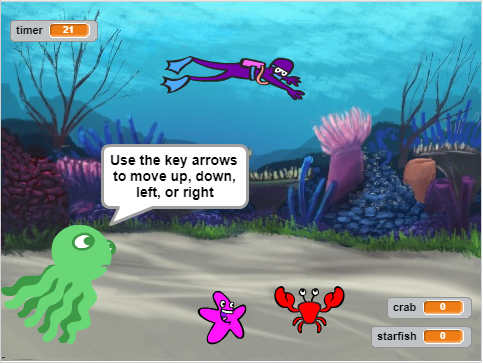

| Name | Description | Picture |
|---|---|---|
| Scratch Game (2018) | For this project our team was challenged to create a game within Scratch which was only 3 levels long. The game had to be original and have good game play. For this game we choose to make the first level just a "capture the creatures" game, where you had to capture sea creatures during a certain amount of time. The second level was a maze game with the same concept as the first level except in a maze. The final level is a guessing game to find in which beach ball is the final fish. During this project I helped design and create the second level. I did majority of the coding, although my teammate made the base of the code. As well as helping with the second level, I also helped connect all 3 levels together. Click here for documentation |  |